94. Risk Aversion or Mistaken Beliefs?#
94.1. Overview#
This lecture explores how risk aversion and mistaken beliefs are confounded in asset pricing data.
In a rational expectations equilibrium containing a risk-averse representative investor, higher mean returns compensate for higher risks.
But in a non-rational expectations model in which a representative investor holds beliefs that differ from “the econometrician’s”, observed average returns depend on both risk aversion and misunderstood return distributions.
Wrong beliefs contribute what look like “stochastic discount factor shocks” when viewed from the perspective of an econometrician who trusts his model.
Those different perspectives can potentially explain observed countercyclical risk prices.
We organize a discussion of these ideas around a single mathematical device, namely, a likelihood ratio, a non-negative random variable with unit mean that twists one probability distribution into another.
Likelihood ratios — equivalently, multiplicative martingale increments — appear in at least four distinct roles in modern asset pricing:
Probability |
Likelihood ratio |
Describes |
|---|---|---|
Econometric |
\(1\) |
macro risk factors |
Risk neutral |
\(m_{t+1}^\lambda\) |
prices of risks |
Mistaken |
\(m_{t+1}^w\) |
experts’ forecasts |
Doubtful |
\(m_{t+1} \in \mathcal{M}\) |
misspecification fears |
Each likelihood ratio takes the log-normal form \(m_{t+1}^b = \exp(-b_t' \varepsilon_{t+1} - \frac{1}{2} b_t' b_t)\) with \(b_t = 0\), \(\lambda_t\), \(w_t\), or a worst-case distortion.
The lecture draws primarily on three lines of work:
Lucas [1978] and Hansen and Singleton [1983]: a representative investor’s risk aversion generates a likelihood ratio that prices risks.
Piazzesi et al. [2015]: survey data on professional forecasters decompose the likelihood ratio into a smaller risk price and a belief distortion.
Hansen et al. [2020] and Szőke [2022]: robust control theory constructs twisted probability models from tilted discounted entropy balls to price model uncertainty, generating state-dependent uncertainty prices that explain puzzling term-structure movements.
We start with some standard imports:
import numpy as np
import matplotlib.pyplot as plt
from scipy.linalg import solve_discrete_lyapunov
from numpy.linalg import inv, eigvals, norm
94.2. Likelihood ratios and twisted densities#
94.2.1. The baseline model#
Let \(\varepsilon\) denote a vector of risks to be taken and priced.
Under the econometrician’s probability model, \(\varepsilon\) has a standard multivariate normal density:
94.2.2. The likelihood ratio#
Define a likelihood ratio
which satisfies \(E\, m(\varepsilon) = 1\) when the mathematical expectation \(E\) is taken with respect to the econometrician’s model.
94.2.3. The twisted density#
The twisted density is
which is a \(\mathcal{N}(-\lambda, I)\) density.
The likelihood ratio has shifted the mean of \(\varepsilon\) from \(0\) to \(-\lambda\) while preserving the covariance.
94.2.4. Relative entropy#
The relative entropy (Kullback–Leibler divergence) of the twisted density with respect to the baseline density is
a convenient scalar measure of the statistical distance between the two models.
The vector \(\lambda\) is the key object.
Depending on context it represents risk prices, belief distortions, or worst-case mean perturbations under model uncertainty.
94.2.5. Visualising the twist#
from scipy.stats import norm as normal_dist
ε = np.linspace(-5, 5, 500)
λ_val = 1.5
ϕ_base = normal_dist.pdf(ε, 0, 1)
m_lr = np.exp(-λ_val * ε - 0.5 * λ_val**2)
ϕ_twist = m_lr * ϕ_base
fig, axes = plt.subplots(1, 3, figsize=(14, 4))
axes[0].plot(ε, ϕ_base, 'steelblue', lw=2)
axes[0].set_title(r"Baseline $\phi(\varepsilon)$: $\mathcal{N}(0,1)$")
axes[0].set_xlabel(r"$\varepsilon$")
axes[1].plot(ε, m_lr, 'firebrick', lw=2)
axes[1].axhline(1, color='grey', lw=0.8, ls='--')
axes[1].set_title(rf"Likelihood ratio $m(\varepsilon)$, $\lambda={λ_val}$")
axes[1].set_xlabel(r"$\varepsilon$")
axes[2].plot(ε, ϕ_base, 'steelblue', lw=1.5,
ls='--', alpha=0.6, label='Baseline')
axes[2].plot(ε, ϕ_twist, 'firebrick', lw=2,
label='Twisted')
axes[2].set_title(
r"Twisted $\hat\phi(\varepsilon)$:"
r" $\mathcal{N}(-\lambda, 1)$")
axes[2].set_xlabel(r"$\varepsilon$")
axes[2].legend()
for ax in axes:
ax.set_ylabel("Density")
plt.tight_layout()
plt.show()
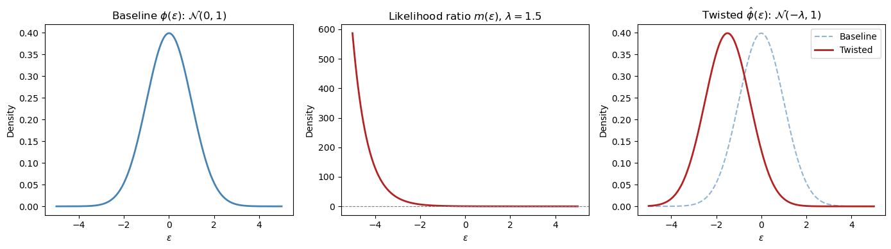
The left panel shows the baseline \(\mathcal{N}(0,1)\) density.
The middle panel shows the likelihood ratio \(m(\varepsilon)\), which up-weights negative \(\varepsilon\) values and down-weights positive ones when \(\lambda > 0\).
The right panel shows the resulting twisted density \(\hat\phi(\varepsilon) = \mathcal{N}(-\lambda, 1)\).
94.3. The econometrician’s state-space model#
94.3.1. State dynamics#
The econometrician works with a linear Gaussian state-space system:
where \(y_{t+1}\) collects utility-relevant variables (e.g., consumption growth), \(r_t = \bar{r}\,x_t\) is the risk-free one-period interest rate, and \(d_t = \bar{d}\,x_t\) is the payout process from an asset.
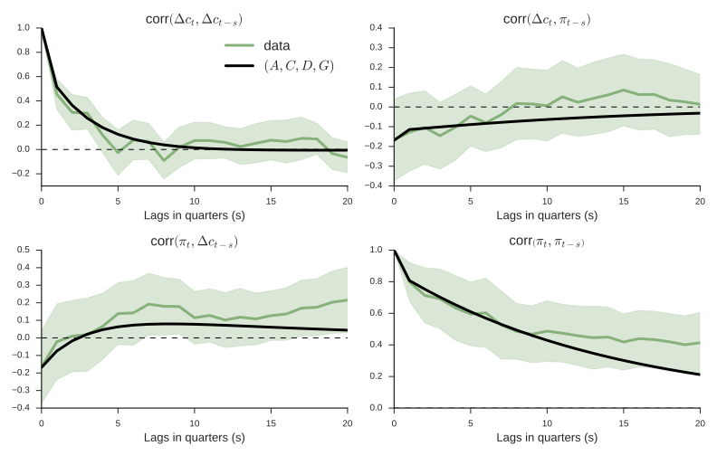
Fig. 94.1 The econometrician’s model: estimated state dynamics.#
94.4. Asset pricing with likelihood ratios#
94.4.1. Risk-neutral rational expectations pricing#
Under rational expectations with a risk-neutral representative investor, stock prices satisfy:
The expectations theory of the term structure of interest rates prices a zero-coupon risk-free claim to one dollar at time \(t+n\) as:
These formulas work “pretty well” for conditional means but less well for conditional variances — the Shiller volatility puzzles.
94.4.2. Modern asset pricing: adding risk aversion#
Let the likelihood ratio increment be
with \(E_t\,m_{t+1}^\lambda = 1\) and \(m_{t+1}^\lambda \geq 0\).
The likelihood ratio \(m_{t+1}^\lambda\) distorts the conditional distribution of \(\varepsilon_{t+1}\) from \(\mathcal{N}(0,I)\) to \(\mathcal{N}(-\lambda\,x_t, I)\).
Covariances of returns with \(m_{t+1}^\lambda\) affect mean returns — this is the channel through which risk aversion prices risks.
With this device, modern asset pricing takes the form:
For stocks (Lucas–Hansen):
For the term structure (Dai–Singleton–Backus–Zin):
94.4.3. Risk-neutral dynamics#
The risk-neutral representation implies twisted dynamics:
The risk-neutral dynamics assert that the shock distribution \(\varepsilon_{t+1}\) has conditional mean \(-\lambda_t\) instead of \(0\).
The dependence of \(\lambda_t = \lambda\,x_t\) on the state modifies the dynamics relative to the econometrician’s model.
94.4.4. Expectation under a twisted distribution#
The mathematical expectation of \(y_{t+1}\) under the probability distribution twisted by likelihood ratio \(m_{t+1}\) is
Under the risk-neutral dynamics, the term structure theory becomes:
These are the same formulas as rational-expectations asset pricing, but expectations are taken with respect to a probability measure twisted by risk aversion.
94.5. Python implementation#
We implement the state-space model and its asset pricing implications.
class LikelihoodRatioModel:
"""
Gaussian state-space model with likelihood ratio twists.
x_{t+1} = A x_t + C ε_{t+1}, ε ~ N(0,I)
y_{t+1} = D x_t + G ε_{t+1}
r_t = delta_0 + r_bar'x_t, λ_t = Λ x_t
"""
def __init__(self, A, C, D, G, r_bar, Λ, δ_0=0.0):
self.A = np.atleast_2d(A).astype(float)
self.C = np.atleast_2d(C).astype(float)
self.D = np.atleast_2d(D).astype(float)
self.G = np.atleast_2d(G).astype(float)
self.r_bar = np.asarray(r_bar, dtype=float)
self.Λ = np.atleast_2d(Λ).astype(float)
self.δ_0 = float(δ_0)
self.n = self.A.shape[0]
self.k = self.C.shape[1]
# risk-neutral dynamics
self.A_Q = self.A - self.C @ self.Λ
def short_rate(self, x):
return self.δ_0 + self.r_bar @ x
def risk_prices(self, x):
return self.Λ @ x
def relative_entropy(self, x):
λ = self.risk_prices(x)
return 0.5 * λ @ λ
def bond_coefficients(self, n_max):
"""Bond price coefficients: log p_t(n) = A_bar_n + B_n' x_t."""
A_bar = np.zeros(n_max + 1)
B = np.zeros((n_max + 1, self.n))
A_bar[1] = -self.δ_0
B[1] = -self.r_bar
CCt = self.C @ self.C.T
for nn in range(1, n_max):
A_bar[nn + 1] = A_bar[nn] + 0.5 * B[nn] @ CCt @ B[nn] - self.δ_0
B[nn + 1] = self.A_Q.T @ B[nn] - self.r_bar
return A_bar, B
def yields(self, x, n_max):
"""Yield curve: y_t(n) = -(A_bar_n + B_n'x_t) / n."""
A_bar, B = self.bond_coefficients(n_max)
return np.array([(-A_bar[n] - B[n] @ x) / n
for n in range(1, n_max + 1)])
def simulate(self, x0, T, rng=None):
"""Simulate under the econometrician's model."""
if rng is None:
rng = np.random.default_rng(42)
X = np.zeros((T + 1, self.n))
X[0] = x0
for t in range(T):
X[t + 1] = self.A @ X[t] + self.C @ rng.standard_normal(self.k)
return X
def simulate_twisted(self, x0, T, rng=None):
"""Simulate under the risk-neutral (twisted) model."""
if rng is None:
rng = np.random.default_rng(42)
X = np.zeros((T + 1, self.n))
X[0] = x0
for t in range(T):
X[t + 1] = self.A_Q @ X[t] + self.C @ rng.standard_normal(self.k)
return X
94.5.1. Example: a two-factor model#
We set up a two-factor model with a persistent “level” factor and a less persistent “slope” factor, mimicking the U.S. yield curve.
A = np.array([[0.97, -0.03],
[0.00, 0.90]])
C = np.array([[0.007, 0.000],
[0.000, 0.010]])
D = np.array([[0.5, 0.3]]) # consumption growth loading
G = np.array([[0.004, 0.003]]) # consumption shock loading
δ_0 = 0.004 # short rate intercept (~4.8% annual)
r_bar = np.array([0.06, 0.04]) # short rate loading
# Risk prices: λ_t = Λ x_t (state-dependent)
Λ = np.array([[-3.0, 0.0],
[ 0.0, -6.0]])
model = LikelihoodRatioModel(A, C, D, G, r_bar, Λ, δ_0=δ_0)
print(f"Eigenvalues of A: {eigvals(A).round(4)}")
print(f"Eigenvalues of A_Q: {eigvals(model.A_Q).round(4)}")
assert all(np.abs(eigvals(model.A_Q)) < 1), "A_Q must be stable!"
Eigenvalues of A: [0.97 0.9 ]
Eigenvalues of A_Q: [0.991 0.96 ]
94.5.2. Yield curves across states#
n_max = 120
maturities = np.arange(1, n_max + 1)
states = {
"Low level, positive slope": np.array([-0.005, 0.01]),
"Medium": np.array([ 0.008, 0.003]),
"High level, negative slope": np.array([ 0.025, -0.01]),
}
fig, ax = plt.subplots(figsize=(9, 5))
for label, x in states.items():
y = model.yields(x, n_max) * 1200 # annualise (monthly → ×1200)
ax.plot(maturities, y, lw=2, label=label)
ax.set_xlabel("Maturity (months)")
ax.set_ylabel("Yield (annualised %)")
ax.set_title("Yield curves under different states")
ax.legend()
plt.tight_layout()
plt.show()
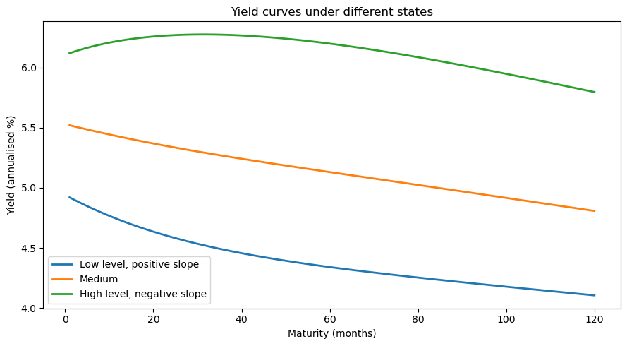
94.5.3. Econometrician’s model vs. risk-neutral model#
A key implication is that the risk-neutral dynamics \(x_{t+1} = (A - C\Lambda)\,x_t + C\,\tilde\varepsilon_{t+1}\) differ from the econometrician’s dynamics \(x_{t+1} = A\,x_t + C\,\varepsilon_{t+1}\).
print("A:\n", model.A)
print("\nA_Q = A - CΛ:\n", model.A_Q)
print(f"\nEigenvalues of A: {eigvals(model.A).round(4)}")
print(f"Eigenvalues of A_Q: {eigvals(model.A_Q).round(4)}")
A:
[[ 0.97 -0.03]
[ 0. 0.9 ]]
A_Q = A - CΛ:
[[ 0.991 -0.03 ]
[ 0. 0.96 ]]
Eigenvalues of A: [0.97 0.9 ]
Eigenvalues of A_Q: [0.991 0.96 ]
T = 300
x0 = np.array([0.01, 0.005])
rng1 = np.random.default_rng(123)
rng2 = np.random.default_rng(123) # same seed for comparability
X_econ = model.simulate(x0, T, rng=rng1)
X_rn = model.simulate_twisted(x0, T, rng=rng2)
fig, axes = plt.subplots(2, 1, figsize=(10, 7), sharex=True)
for i, (ax, lab) in enumerate(zip(axes, ["Level factor", "Slope factor"])):
ax.plot(X_econ[:, i], 'steelblue', lw=1.2,
label="Econometrician (P)")
ax.plot(X_rn[:, i], 'firebrick', lw=1.2,
alpha=0.8, label="Risk-neutral (Q)")
ax.set_ylabel(lab)
ax.legend()
axes[1].set_xlabel("Period")
axes[0].set_title("State paths: physical vs. risk-neutral")
plt.tight_layout()
plt.show()
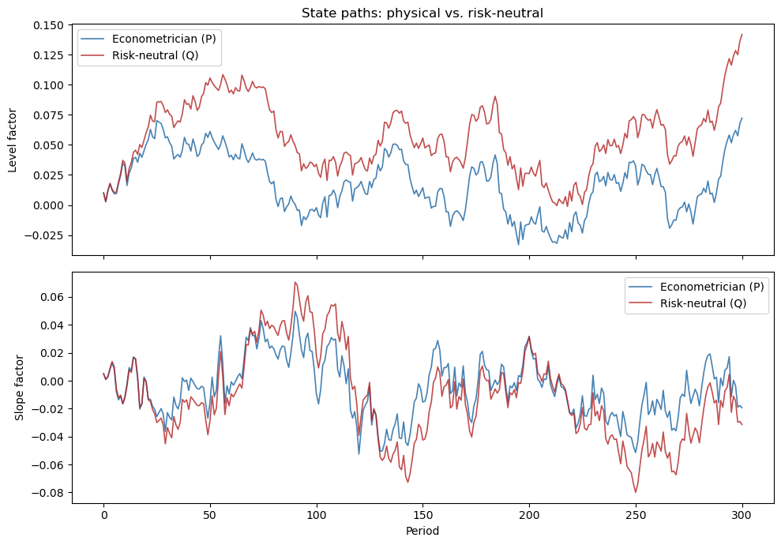
94.6. An identification challenge#
The vector \(\lambda_t\) can be interpreted as either:
a risk price vector expressing the representative agent’s risk aversion, or
the representative agent’s belief distortion relative to the econometrician’s model.
The asset pricing formulas (94.10)–(94.11) are identical under both interpretations, and so are the econometric fits.
Relative to the model of a risk-averse representative investor with rational expectations, a model of a risk-neutral investor with appropriately mistaken beliefs produces observationally equivalent predictions.
This insight was articulated by Hansen et al. [1999] and Piazzesi et al. [2015].
To distinguish risk aversion from belief distortion, one needs either more information (the PSS approach using survey data) or more theory (the Hansen–Szőke robust control approach), or both (the Szőke [2022] approach).
x_test = np.array([0.01, 0.005])
y_risk_averse = model.yields(x_test, 60) * 1200
# "Mistaken belief" model: zero risk prices but twisted A
model_mistaken = LikelihoodRatioModel(
A=model.A_Q, C=C, D=D, G=G,
r_bar=r_bar, Λ=np.zeros_like(Λ), δ_0=δ_0
)
y_mistaken = model_mistaken.yields(x_test, 60) * 1200
fig, ax = plt.subplots(figsize=(8, 5))
ax.plot(np.arange(1, 61), y_risk_averse, 'steelblue', lw=3,
label='Risk averse + rational expectations')
ax.plot(np.arange(1, 61), y_mistaken, 'firebrick', lw=1.5, ls='--',
label='Risk neutral + mistaken beliefs')
ax.set_xlabel("Maturity (months)")
ax.set_ylabel("Yield (annualised %)")
ax.set_title("Observational equivalence")
ax.legend()
plt.tight_layout()
plt.show()
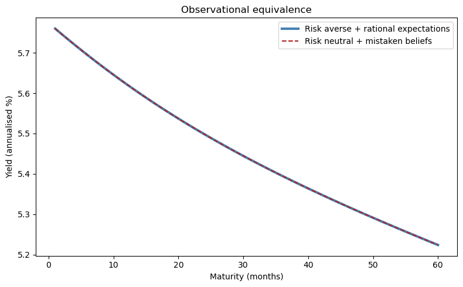
The two yield curves are identical.
Without additional information (e.g., surveys of forecasters), we cannot tell them apart from asset price data alone.
94.7. More information: experts’ forecasts (PSS)#
94.7.1. The PSS framework#
Piazzesi et al. [2015] (henceforth PSS) exploit data on professional forecasters’ expectations to decompose the likelihood ratio into risk prices and belief distortions. Their setup posits:
The representative agent’s risk aversion leads him to price risks \(\varepsilon_{t+1}\) with prices \(\lambda_t^* = \lambda^* x_t\).
The representative agent has twisted beliefs \((A^*, C) = (A - Cw^*, C)\) relative to the econometrician’s model \((A, C)\).
Professional forecasters use the twisted beliefs \((A^*, C)\) to answer survey questions about their forecasts.
94.7.2. Estimation strategy#
PSS proceed in four steps:
Use data \(\{x_t\}_{t=0}^T\) to estimate the econometrician’s model \(A\), \(C\).
Project experts’ forecasts \(\{\hat{x}_{t+1}\}\) on \(x_t\) to obtain \(\hat{x}_{t+1} = A^* x_t\) and interpret \(A^*\) as incorporating belief distortions.
Back out the mean distortion \(w^* x_t = -C^{-1}(A^* - A) x_t\) to the density of \(\varepsilon_{t+1}\).
Reinterpret the \(\lambda\) estimated by the rational-expectations econometrician as \(\lambda = \lambda^* + w^*\), where \(\lambda_t^* = \lambda^* x_t\) is the (smaller) price of risk vector actually charged by the representative agent with distorted beliefs.
An econometrician who mistakenly imposes rational expectations estimates risk prices \(\lambda_t\) that sum two parts:
smaller risk prices \(\lambda_t^*\) actually charged by the erroneous-beliefs representative agent, and
conditional mean distortions \(w_t^*\) of the risks \(\varepsilon_{t+1}\) that the twisted-beliefs representative agent’s model displays relative to the econometrician’s.
94.7.3. Numerical illustration#
A_econ = np.array([[0.97, -0.03],
[0.00, 0.90]])
A_star = np.array([[0.985, -0.025], # experts' subjective transition
[0.000, 0.955]])
C_mat = np.array([[0.007, 0.000],
[0.000, 0.010]])
# Belief distortion: w* = -C⁻¹(A* - A)
w_star = -inv(C_mat) @ (A_star - A_econ)
Λ_total = np.array([[-3.0, 0.0],
[ 0.0, -6.0]])
Λ_true = Λ_total - w_star # true risk prices
print("Belief distortion w*:\n", w_star.round(3))
print("\nTotal risk prices Λ:\n", Λ_total.round(3))
print("\nTrue risk prices Λ*:\n", Λ_true.round(3))
Belief distortion w*:
[[-2.143 -0.714]
[ 0. -5.5 ]]
Total risk prices Λ:
[[-3. 0.]
[ 0. -6.]]
True risk prices Λ*:
[[-0.857 0.714]
[ 0. -0.5 ]]
x_grid = np.linspace(-0.02, 0.04, 200)
fig, axes = plt.subplots(1, 2, figsize=(12, 5))
for i, (ax, lab) in enumerate(zip(axes,
["Level factor risk price", "Slope factor risk price"])):
x_vals = np.zeros((200, 2))
x_vals[:, i] = x_grid
x_vals[:, 1 - i] = 0.005
λ_total = np.array([Λ_total @ x for x in x_vals])[:, i]
λ_true = np.array([Λ_true @ x for x in x_vals])[:, i]
ax.plot(x_grid, λ_total, 'steelblue', lw=2,
label=r"$\lambda_t$ (RE econometrician)")
ax.plot(x_grid, λ_true, 'seagreen', lw=2,
label=r"$\lambda^*_t$ (true risk price)")
ax.fill_between(x_grid, λ_true, λ_total, alpha=0.15, color='firebrick',
label=r"$w^*_t$ (belief distortion)")
ax.axhline(0, color='black', lw=0.5)
ax.set_xlabel(f"State $x_{{{i+1},t}}$")
ax.set_ylabel(lab)
ax.legend()
axes[0].set_title("PSS decomposition: level")
axes[1].set_title("PSS decomposition: slope")
plt.tight_layout()
plt.show()
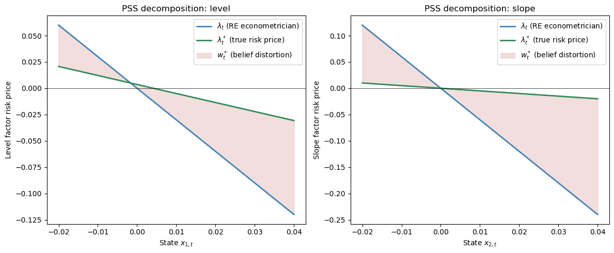
PSS find that experts perceive the level and slope of the yield curve to be more persistent than the econometrician’s estimates imply.
Subjective risk prices \(\lambda^* x_t\) vary less than the \(\lambda x_t\) estimated by the rational-expectations econometrician.
94.8. Rationalizing rational expectations#
94.8.1. The informal justification#
The standard justification for rational expectations treats it as the outcome of learning from an infinite history: least-squares learning converges to rational expectations.
The argument requires that:
agents know correct functional forms, and
a stochastic approximation argument partitions dynamics into a fast part (that justifies a law of large numbers) and a slow part (that justifies an ODE).
However, long intertemporal dependencies make rates of convergence slow.
94.8.2. Good econometricians#
Good econometricians have limited data and only hunches about functional forms.
They fear that their fitted models are incorrect.
An agent who is like a good econometrician:
has a parametric model estimated from limited data,
acknowledges that many other specifications fit nearly as well — other parameter values, other functional forms, omitted variables, neglected nonlinearities, and history dependencies,
fears that one of those other models actually prevails, and
seeks “good enough” decisions under all such alternative models — robustness.
94.9. A theory of belief distortions: robust control#
94.9.1. Hansen’s dubious agent#
Inspired by robust control theory, consider a dubious investor who:
shares the econometrician’s model \(A\), \(C\), \(D\), \(G\),
expresses doubts by using a continuum of likelihood ratios to form a discounted entropy ball of size \(\eta\) around the econometrician’s model,
wants a valuation that is good for every model in the entropy ball, and
constructs a lower bound on values and a worst-case model that attains it.
94.9.2. Valuation under the econometrician’s model#
Taking the log consumption process to be linear Gaussian with shocks \(\varepsilon_{t+1} \sim \mathcal{N}(0,I)\):
the dubious agent’s value function is
94.9.3. The sequence problem#
The dubious agent solves:
subject to
The likelihood ratio process \(\{M_t\}_{t=0}^{\infty}\) is a multiplicative martingale.
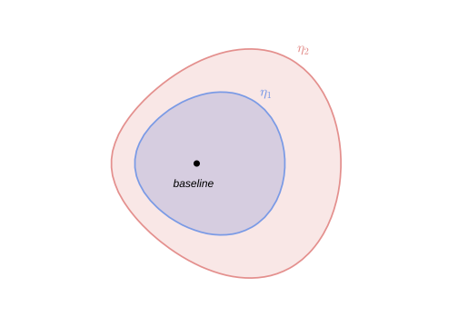
Fig. 94.2 Discounted entropy ball around the econometrician’s model.#
94.9.4. Why discounted entropy?#
Discounted entropy includes models that undiscounted entropy excludes.
Undiscounted entropy over infinite sequences excludes many models that are very difficult to distinguish from the econometrician’s model with limited data, because undiscounted entropy includes only models that share laws of large numbers.
94.9.5. Entropy and the likelihood ratio#
With the log-normal likelihood ratio
conditional entropy takes the simple form
Substituting into (94.13) yields the reformulated problem:
subject to
94.9.6. Outcome: constant worst-case distortion#
The worst-case mean distortion turns out to be a constant vector:
The consequence is that the contribution of \(w_t\) to risk prices is state-independent.
This does not help explain countercyclical prices of risk (or prices of model uncertainty).
def hansen_worst_case(A, C, D, G, β, θ):
"""Constant worst-case distortion w_bar for Hansen's dubious agent."""
n = A.shape[0]
v = β * np.linalg.solve(np.eye(n) - β * A.T, D.T.flatten()) / (1 - β)
w_bar = (1.0 / θ) * (β / (1 - β) * G.T.flatten() + β * C.T @ v)
return w_bar
β = 0.995
θ_values = [0.5, 1.0, 2.0, 5.0]
print(f"{'θ':>6} {'w_bar[0]':>10} {'w_bar[1]':>10} {'Entropy':>10}")
print("-" * 42)
for θ in θ_values:
w = hansen_worst_case(A, C, D, G, β, θ)
print(f"{θ:>6.1f} {w[0]:>10.4f} {w[1]:>10.4f} {0.5 * w @ w:>10.4f}")
θ w_bar[0] w_bar[1] Entropy
------------------------------------------
0.5 41.3634 -3.6667 862.1896
1.0 20.6817 -1.8333 215.5474
2.0 10.3409 -0.9167 53.8869
5.0 4.1363 -0.3667 8.6219
The worst-case distortion \(\bar{w}\) is constant — it does not depend on the state \(x_t\).
Larger \(\theta\) (less concern about misspecification) yields a smaller distortion.
94.10. Tilting the entropy ball#
94.10.1. Hansen and Szőke’s more refined dubious agent#
To generate state-dependent uncertainty prices, Hansen and Szőke introduce a more refined dubious agent who:
shares the econometrician’s model \(A\), \(C\), \(D\), \(G\),
expresses doubts by using a continuum of likelihood ratios to form a discounted entropy ball around the econometrician’s model, and
also insists that some martingales representing particular alternative parametric models be included in the discounted entropy ball.
The inclusion of those alternative parametric models tilts the entropy ball, which affects the worst-case model in a way that can produce countercyclical uncertainty prices.
94.10.2. Concern about other parametric models#
The investor wants to include particular alternative models with
and discounted entropy
This is accomplished by replacing the earlier entropy constraint with
The time-\(t\) contributions to the right-hand side of (94.15) relax the discounted entropy constraint in states \(x_t\) in which \(\xi(x_t)\) is larger.
This sets the stage for state-dependent mean distortions in the worst-case model.
94.10.3. Concern about bigger long-run risk#
Inspired by Bansal and Yaron [2004], an agent fears particular long-run risks expressed by
This corresponds to \(\bar{w}_t = \bar{w}\,x_t\) with
which implies a quadratic \(\xi\) function:
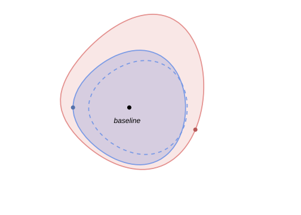
Fig. 94.3 Tilted discounted entropy balls. Including particular parametric alternatives with more long-run risk tilts the entropy ball and generates state-dependent worst-case distortions.#
94.10.4. The Szőke agent’s sequence problem#
The resulting linear-quadratic problem is:
subject to
The worst-case shock mean distortion is now state-dependent:
and the worst-case model is \((\tilde{A}, C, \tilde{D}, G)\) with
94.10.5. Implementation: tilted entropy ball#
class TiltedEntropyModel:
"""
Hansen–Szőke tilted entropy ball model.
Given (A, C, D, G, β, θ, Ξ), computes the worst-case
state-dependent distortion w_tilde_t = W_tilde x_t.
"""
def __init__(self, A, C, D, G, β, θ, Ξ):
self.A = np.atleast_2d(A).astype(float)
self.C = np.atleast_2d(C).astype(float)
self.D = np.atleast_2d(D).astype(float)
self.G = np.atleast_2d(G).astype(float)
self.β, self.θ = float(β), float(θ)
self.Ξ = np.atleast_2d(Ξ).astype(float)
self.n = self.A.shape[0]
self.w_tilde = self._solve_worst_case()
self.A_tilde = self.A - self.C @ self.w_tilde
self.D_tilde = self.D - self.G @ self.w_tilde
def _solve_worst_case(self):
"""Iterate on (P, W) system to find worst-case W_tilde."""
n, k = self.n, self.C.shape[1]
β, θ = self.β, self.θ
P = np.zeros((n, n))
for _ in range(2000):
M = θ * np.eye(k) + 2 * β * self.C.T @ P @ self.C
W = np.linalg.solve(M, 2 * β * self.C.T @ P @ self.A)
A_w = self.A - self.C @ W
P_new = (-(θ / 2) * self.Ξ
+ (θ / 2) * W.T @ W
+ β * A_w.T @ P @ A_w)
P_new = 0.5 * (P_new + P_new.T)
if np.max(np.abs(P_new - P)) < 1e-12:
break
P = P_new
self._P_quad = P
return W
def worst_case_distortion(self, x):
return self.w_tilde @ x
def conditional_entropy(self, x):
w = self.worst_case_distortion(x)
return 0.5 * w @ w
def xi_function(self, x):
return x @ self.Ξ @ x
# Feared parametric model: more persistent dynamics
A_bar = np.array([[0.995, -0.03],
[0.000, 0.96]])
w_bar = -inv(C) @ (A_bar - A)
Ξ = w_bar.T @ w_bar
print("Feared transition A_bar:\n", A_bar)
print("\nImplied distortion w_bar:\n", w_bar.round(3))
print("\nTilting matrix Ξ:\n", Ξ.round(1))
Feared transition A_bar:
[[ 0.995 -0.03 ]
[ 0. 0.96 ]]
Implied distortion w_bar:
[[-3.571 0. ]
[ 0. -6. ]]
Tilting matrix Ξ:
[[12.8 0. ]
[ 0. 36. ]]
θ_tilt = 3.0
tilted = TiltedEntropyModel(A, C, D, G, β, θ_tilt, Ξ)
print("Worst-case distortion W_tilde:\n", tilted.w_tilde.round(4))
print("\nWorst-case transition A_tilde:\n", tilted.A_tilde.round(4))
print(f"\nEigenvalues of A: {eigvals(A).round(4)}")
print(f"Eigenvalues of A_tilde: {eigvals(tilted.A_tilde).round(4)}")
Worst-case distortion W_tilde:
[[-1.7572 0.5461]
[ 0.7572 -2.1579]]
Worst-case transition A_tilde:
[[ 0.9823 -0.0338]
[-0.0076 0.9216]]
Eigenvalues of A: [0.97 0.9 ]
Eigenvalues of A_tilde: [0.9863 0.9176]
94.10.6. State-dependent entropy: the key innovation#
x_grid = np.linspace(-0.03, 0.04, 200)
entropy_tilted = np.array([tilted.conditional_entropy(np.array([x, 0.005]))
for x in x_grid])
ξ_vals = np.array([tilted.xi_function(np.array([x, 0.005]))
for x in x_grid])
fig, ax = plt.subplots(figsize=(9, 5))
ax.axhline(0, color='steelblue', lw=2, ls='--',
label=r"Hansen: constant $\bar{w}$")
ax.plot(x_grid, entropy_tilted, 'firebrick', lw=2,
label=r"Szőke: $\frac{1}{2}\tilde{w}_t'\tilde{w}_t$")
ax.plot(x_grid, 0.5 * ξ_vals, 'seagreen', lw=1.5, ls=':',
label=r"Feared model: $\frac{1}{2}\xi(x_t)$")
ax.set_xlabel(r"Level factor $x_{1,t}$")
ax.set_ylabel("State-dependent conditional entropy")
ax.set_title("State-dependent vs. constant worst-case distortions")
ax.legend()
plt.tight_layout()
plt.show()
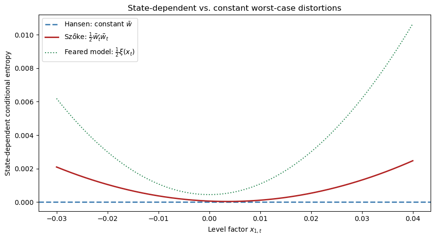
The key innovation of the tilted entropy ball is visible: the Szőke worst-case distortion \(\tilde{w}_t = \tilde{W}\,x_t\) grows with \(|x_t|\), producing countercyclical uncertainty prices.
When the state is far from its mean, the agent’s worst-case model deviates more from the econometrician’s model.
By contrast, Hansen’s constant distortion \(\bar{w}\) contributes nothing state-dependent.
The Szőke parabola lies inside the feared model’s entropy budget \(\frac{1}{2}\xi(x_t)\), confirming the worst-case distortion respects the tilted entropy constraint.
94.10.7. Three probability twisters#
To summarize, three distinct probability twisters play roles in this analysis:
Symbol |
Source |
Describes |
|---|---|---|
\(w_t^*\) |
Piazzesi, Salomao, Schneider |
Mistaken agent’s beliefs |
\(\bar{w}_t\) |
Szőke’s feared parametric model |
Especial LRR parametric worry |
\(\tilde{w}_t\) |
Szőke’s worst-case model |
Worst-case distortion |
x_state = np.array([0.02, 0.008])
w_pss = w_star @ x_state
w_feared = w_bar @ x_state
w_szoke = tilted.worst_case_distortion(x_state)
ε_grid = np.linspace(-4, 4, 500)
ϕ_base = normal_dist.pdf(ε_grid, 0, 1)
fig, ax = plt.subplots(figsize=(9, 5))
ax.plot(ε_grid, ϕ_base, 'black', lw=2,
label='Econometrician: $\\mathcal{N}(0,1)$')
for w_val, label, color, ls in [
(w_pss[0], r"PSS mistaken $w^*_t$", 'steelblue', '-'),
(w_feared[0], r"Feared LRR $\bar{w}_t$", 'seagreen', '--'),
(w_szoke[0], r"Szőke worst-case $\tilde{w}_t$", 'firebrick', '-'),
]:
ax.plot(ε_grid, normal_dist.pdf(ε_grid, -w_val, 1),
color=color, lw=2, ls=ls, label=label)
ax.set_xlabel(r"$\varepsilon_1$")
ax.set_ylabel("Density")
ax.set_title("Three probability twisters (first shock component)")
ax.legend()
plt.tight_layout()
plt.show()
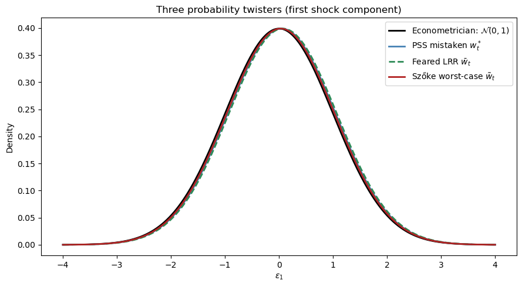
94.11. Empirical challenges and model performances#
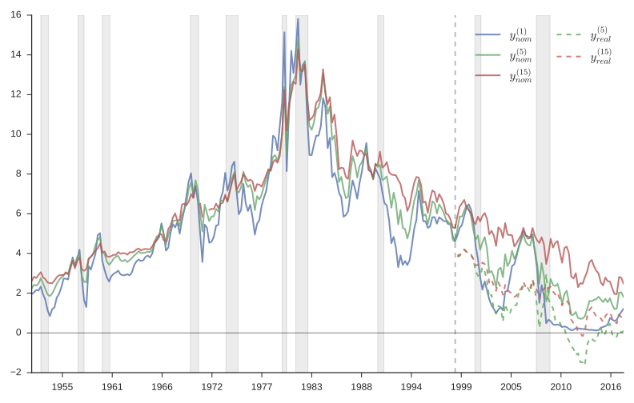
Fig. 94.4 U.S. term structure of interest rates.#
Several recognised patterns characterise the U.S. term structure:
The nominal yield curve usually slopes upward.
The long-minus-short yield spread narrows before U.S. recessions and widens after them.
Consequently, the slope of the yield curve helps predict aggregate inputs and outputs.
Long and short yields are almost equally volatile (the Shiller “volatility puzzle”).
To solve the Shiller puzzle, risk prices (or something observationally equivalent) must depend on volatile state variables.
The following table summarises how various models perform:
Model |
Average slope |
Slopes near recessions |
Volatile long yield |
|---|---|---|---|
Lucas [1978] |
no |
no |
no |
Epstein–Zin with LRR |
maybe |
yes |
no |
Piazzesi et al. [2015] |
built-in |
built-in |
yes |
Szőke [2022] |
YES |
yes |
yes |
94.11.1. Why Szőke’s model succeeds#
Szőke’s framework delivers:
A theory of state-dependent belief distortions \(\tilde{w}_t = \tilde{w}\,x_t\).
A theory about the question that professional forecasters answer: they respond with their worst-case model because they hear “tell me forecasts that rationalise your (max-min) decisions.”
A way to measure the size of belief distortions relative to the econometrician’s model.
model_rn = LikelihoodRatioModel(
A, C, D, G, r_bar, Λ=np.zeros((2, 2)), δ_0=δ_0)
model_uncert = LikelihoodRatioModel(
A, C, D, G, r_bar, Λ=tilted.w_tilde, δ_0=δ_0)
x_test = np.array([0.01, 0.005])
n_max = 120
mats = np.arange(1, n_max + 1)
fig, ax = plt.subplots(figsize=(9, 5))
ax.plot(mats, model_rn.yields(x_test, n_max) * 1200,
'grey', lw=1.5, ls=':', label='Risk neutral')
ax.plot(mats, model.yields(x_test, n_max) * 1200,
'steelblue', lw=2, label=r'Risk aversion ($\Lambda x_t$)')
ax.plot(mats, model_uncert.yields(x_test, n_max) * 1200,
'firebrick', lw=2, ls='--',
label=r'Model uncertainty ($\tilde{W} x_t$)')
ax.set_xlabel("Maturity (months)")
ax.set_ylabel("Yield (annualised %)")
ax.set_title("Yield curves: alternative sources of term premia")
ax.legend()
plt.tight_layout()
plt.show()
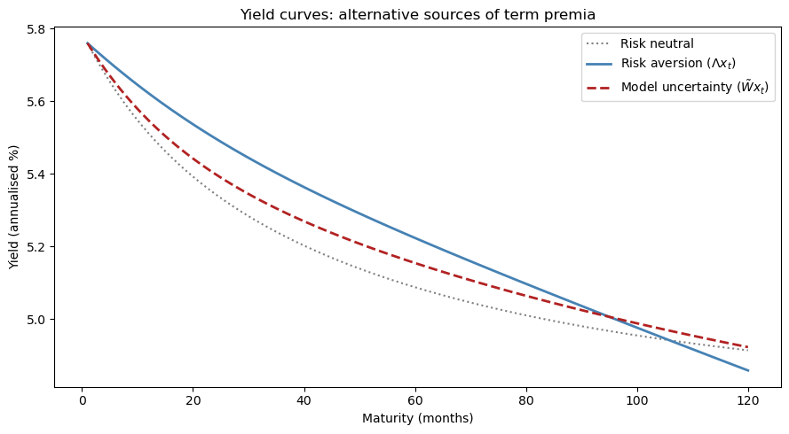
The risk-aversion-only and model-uncertainty-only yield curves both slope upward, generating a term premium.
The two explanations represent alternative channels for the same observed term premium — reinforcing the identification challenge explored throughout this lecture.
94.12. Cross-equation restrictions and estimation#
A key appeal of the robust control approach is that it lets us deviate from rational expectations while still preserving a set of powerful cross-equation restrictions on decision makers’ beliefs.
As Szőke [2022] puts it:
An appealing feature of robust control theory is that it lets us deviate from rational expectations, but still preserves a set of powerful cross-equation restrictions on decision makers’ beliefs. … Consequently, estimation can proceed essentially as with rational expectations econometrics. The main difference is that now restrictions through which we interpret the data emanate from the decision maker’s best response to a worst-case model instead of to the econometrician’s model.
94.12.1. Szőke’s empirical strategy#
Stage I: Estimation
Use \(\{x_t, c_t\}_{t=0}^T\) to estimate the econometrician’s \(A\), \(C\), \(D\), \(G\).
View \(\Xi\) as a matrix of additional free parameters and estimate them simultaneously with risk prices \(\tilde\lambda\,x_t\) from data \(\{p_t(n+1)\}_{n=1}^N\), \(t = 0, \ldots, T\), by imposing cross-equation restrictions:
where
Stage II: Assessment
Assess improvements in predicted behaviour of the term structure.
Use estimated worst-case dynamics to form distorted forecasts \(\tilde{x}_{t+1} = (A - C\tilde{w})x_t\) and compare them to those of professional forecasters.
Compute discounted relative entropy of the worst-case twisted model relative to the econometrician’s model to assess how difficult it is to distinguish the two models statistically.
def discounted_entropy(W, A_w, C, x0, β, T_horizon=500):
"""Approximate (1/2) E^w [Σ β^t w_t'w_t] by simulation."""
n_sims = 10_000
rng = np.random.default_rng(2024)
X = np.tile(x0, (n_sims, 1))
total = np.zeros(n_sims)
for t in range(T_horizon):
w_t = X @ W.T
total += β**t * 0.5 * np.sum(w_t**2, axis=1)
X = X @ A_w.T + rng.standard_normal((n_sims, len(x0))) @ C.T
return np.mean(total)
x0_test = np.array([0.01, 0.005])
ent_szoke = discounted_entropy(tilted.w_tilde, tilted.A_tilde, C, x0_test, β)
ent_feared = discounted_entropy(w_bar, A_bar, C, x0_test, β)
print(f"Szőke worst-case entropy: {ent_szoke:.4f}")
print(f"Feared LRR entropy: {ent_feared:.4f}")
status = ('closer to' if ent_szoke < ent_feared
else 'farther from')
print(f"\nWorst-case model is {status} "
f"the econometrician's model.")
Szőke worst-case entropy: 1.0730
Feared LRR entropy: 10.7140
Worst-case model is closer to the econometrician's model.
94.13. Multiplier preferences#
The multiplier preference version of the dubious agent’s problem is:
with \(M_{t+1} = M_t\,m_{t+1}\), \(E[m_{t+1} \mid x_t, c_t] = 1\), \(M_0 = 1\).
The recursive formulation is:
where the right-hand side is attained by
Relationship between multiplier and constraint problems. By Lagrange multiplier theory,
def T_operator(V, θ, probs=None):
"""Risk-sensitivity operator: T[V] = -θ log E[exp(-V/θ)]."""
if probs is None:
probs = np.ones(len(V)) / len(V)
V_s = V / θ
max_v = np.max(V_s)
return -θ * (max_v + np.log(np.sum(probs * np.exp(V_s - max_v))))
rng = np.random.default_rng(42)
V_samples = rng.normal(loc=5.0, scale=1.0, size=10_000)
E_V = np.mean(V_samples)
θ_grid = np.logspace(-1, 3, 50)
T_vals = [T_operator(V_samples, θ) for θ in θ_grid]
fig, ax = plt.subplots(figsize=(8, 5))
ax.semilogx(θ_grid, T_vals, 'firebrick', lw=2, label=r"$T_\theta[V]$")
ax.axhline(E_V, color='steelblue', lw=1.5,
ls='--', label=r"$E[V]$ (risk neutral)")
ax.set_xlabel(r"Robustness parameter $\theta$")
ax.set_ylabel("Value")
ax.set_title(r"Risk-sensitivity operator $T_\theta$")
ax.legend()
ax.annotate(r"$\theta \to \infty$: risk neutral",
xy=(500, E_V), fontsize=11, color='steelblue',
xytext=(50, E_V - 0.8),
arrowprops=dict(arrowstyle='->', color='steelblue'))
ax.annotate(r"Small $\theta$: very robust",
xy=(0.15, T_vals[1]), fontsize=11, color='firebrick',
xytext=(0.5, T_vals[1] - 0.5),
arrowprops=dict(arrowstyle='->', color='firebrick'))
plt.tight_layout()
plt.show()
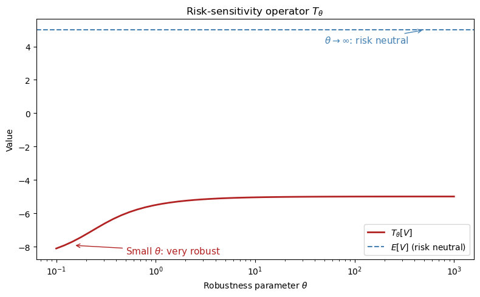
As \(\theta \to \infty\), the risk-sensitivity operator converges to the ordinary expectation \(E[V]\) — the agent becomes risk neutral.
As \(\theta\) shrinks, the operator places more weight on bad outcomes, reflecting greater concern about model misspecification.
94.14. Who cares?#
Joint probability distributions of interest rates and macroeconomic shocks are important throughout macroeconomics:
Costs of aggregate fluctuations. Welfare assessments of business cycles depend sensitively on how risks are priced.
Consumption Euler equations. The “New Keynesian IS curve” is a log-linearised consumption Euler equation whose risk adjustments are controlled by the stochastic discount factor.
Optimal taxation and government debt management. Government bond prices embed risk prices whose state dependence matters for optimal fiscal policy.
Central bank expectations management. Forward guidance works by shifting the term structure, an exercise whose effects depend on the same likelihood ratios studied here.
Long-run risk and secular stagnation. The Bansal–Yaron long-run risk hypothesis is difficult to detect statistically, yet an agent who fears it in the sense formalised above may behave very differently than one who does not.
Understanding whether observed asset prices reflect risk aversion, mistaken beliefs, or fears of model misspecification — and quantifying each component — is interesting for both positive and normative macroeconomics.